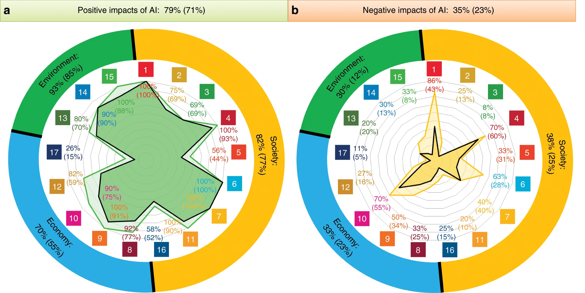

Artificielle#
Introduction#
Note
Intégrer les différentes vidéos dans un dropdown (en savoir plus)
Usage de l’IA#
Note
Article scientifique sur les usages de l’IA a lire et vulgariser
Atrophie ou Augmentation#
Note
Extraire les information pertinentes de ce tallk et notemment l’idée du nutriscore !!
Inclure les deux images dans doc et expliquer la démarche du Brain to LLM (et non l’inverse)
Extraire les différentes sources scientifiques
IA and SDG#
Note
Explorer et utiliser pour analyser la figure ci-dessous
{kind=link}

Fig. 11 IA and SDGs - Source : [Vinuesa et al., 2020]#
[Vinuesa et al., 2020] Article cientifique dont on peut extraire des figures
Note
Couper et créer deux figures distinctes et lire l’article pour créer un dropdown réflexion sous chacune d’elle
Outils#
Tests#
BMAD Methode#
Claude Code etc
Note
Tuto Youtube + explications
Note
Lire, mettre en place et docuùenter - introduire dans budget (Claude 10 test)
Notes sommet IA France#
Talk 1#
De l’utilisateur IA au pilote IA
3 Niveaux qui s’emboitent
Résultat = Contexte x IA x Prompt
Note
Le site est une doc qui permet de donner du contexte à l’IA. Exprimé comme le concept le plus important !
Possibilité de business
Outil Obsidian utilisé pour construire la BDD - Inclure dans Analyse
Markdown est le language le mieux compris par l’IA
Ingénieurie du prompting#
Ethan Mollick - Co-intelligence
Ingénierie du contexte#
RAG ? Retrieval augmented generation ? NotebbokLM (Google - initialement concue pour la pédagogie)
Ingénieurie des solutions#
Talk 2#
Différents défis du leadership (pas tous vu - retard)
Actions#
1 : Avoir une crédibilité minimale sur l’IA
2 : Donner un cadre clair
3 : repenser le travail, pas seulement les outils
4 : Organiser des retours terrains
5 : Anticiper sans surinvestir
Talk 3#
Talk 4#
IA et conformité : les obligations que vous ignorez (et qui peuvent vous coûter cher)
Note
Récupérer le support et inclure les différentes définitions !
Différence entre un système et un modèle
3 Statuts différents :
Fournisseur (met sur le marché)
Fournisseur en aval (celui qui intègre un modèle dans son système)
Déployeur (acteur, utilisateur, celui qui utilise le système dans un cadre pro)
Classification des systèmes d’IA (4 niveaux)
Talk 5#
SecNumCloud ?
Talk 6#
IA et RGPD